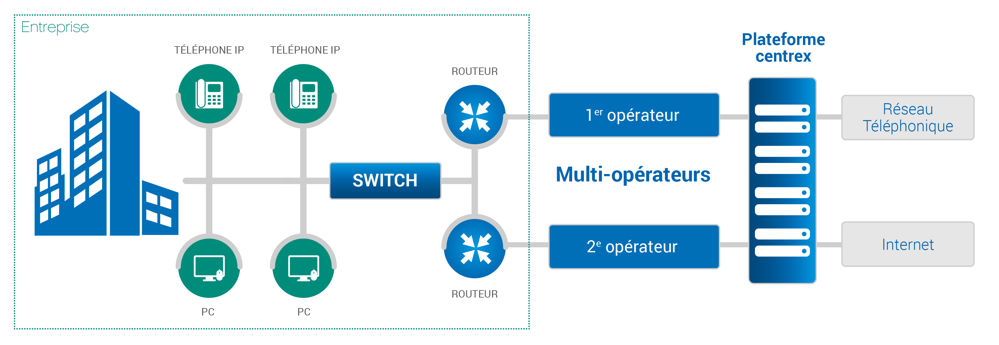

Les différents types de téléphonie sur IP ?
- Il existe deux infrastructures de Téléphonie sur IP :
- L’IPBX, une infrastructure dite « dédiée »
- Le Centrex, une infrastructure dite « gérée et mutualisée ».
Pour le Centrex : contrairement à l’IPBX, le serveur téléphonique est hébergé chez un prestataire. Il est donc déjà configuré et maintenu. Pour les entreprises, avoir un Centrex est un gain de temps, avec la possibilité de relier plusieurs sites sur le même serveur tout en répartissant les coûts.
Afin de connaître la solution la plus adéquate pour votre société, il suffit de lister vos besoins en termes de :
Quantité de postes téléphoniques ; Nombre de lignes ; Garantie et qualité souhaitées. 